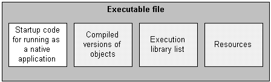
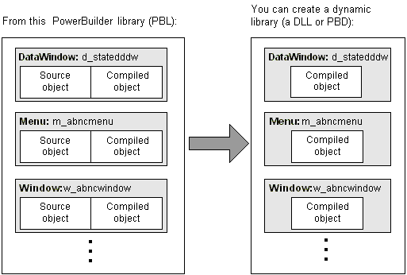
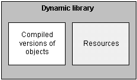
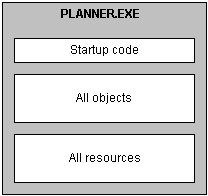
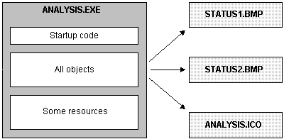
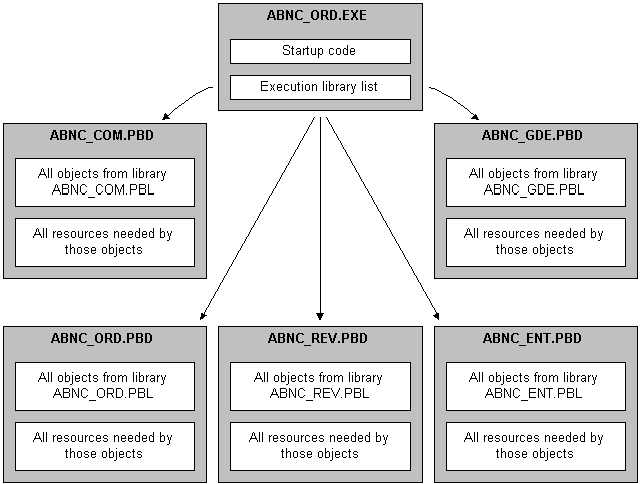
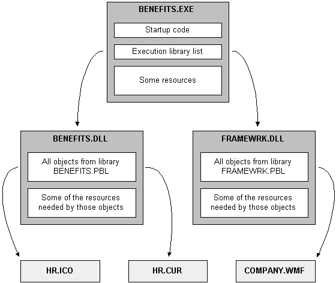

The next few sections tell you more about the packaging process and provide information to help you make choices about the resulting application. They cover:
When you plan an application, one of the fundamental topics to think about is the compiler format in which you want that application generated. PowerBuilder offers two alternatives: Pcode and machine code.
Pcode (short for pseudocode) is an interpreted language that is supported on all PowerBuilder platforms. This is the same format that PowerBuilder uses in libraries (PBL files) to store individual objects in an executable state. Advantages of Pcode include its size, reliability, and portability.
PowerBuilder generates and compiles code to create a machine code executable or dynamic library. The key advantage of machine code is speed of execution.
 PowerBuilder DLLs cannot be called PowerBuilder machine code DLLs cannot be called from other
applications.
PowerBuilder DLLs cannot be called PowerBuilder machine code DLLs cannot be called from other
applications.
Here are some guidelines to help you decide whether Pcode or machine code is right for your project:
No matter which compiler format you pick, an application that you create in PowerBuilder can consist of one or more of the following pieces:
To decide which of these pieces are required for your particular project, you need to know something about them.
If you are building a single- or two-tier application that you will distribute to users as an executable file, rather than as a server component or a Web application, you always create an executable (EXE) file.
At minimum, the executable file contains code that enables your application to run as a native application on its target platform. That means, for example, that when users want to start your application, they can double-click the executable file's icon on their desktop.
What else can go in the executable file Depending on the packaging model you choose for your application, the executable file also contains one or more of the following:

As an alternative to putting your entire application in one large executable file, you can deliver some (or even all) of its objects in one or more dynamic libraries. The way PowerBuilder implements dynamic libraries depends on the compiler format you choose.
As with an executable file, only compiled versions of objects (and not their sources) go into dynamic libraries.

What else can go in dynamic libraries Unlike your executable file, dynamic libraries do not include any start-up code. They cannot be executed independently. Instead, they are accessed as an application executes when it cannot find the objects it requires in the executable file.
Dynamic libraries can include resources such as bitmaps. You might want to put any resources needed by a dynamic library's objects in its DLL or PBD file. This makes the dynamic library a self-contained unit that can easily be reused. If performance is your main concern, however, be aware that resources are loaded faster at runtime when they are in the executable file.

Why use them Table 40-2 lists several reasons why you might want to use dynamic libraries.
Organizing them Once you decide to use a dynamic library, you need to tell PowerBuilder which library (PBL file) to create it from. PowerBuilder then places compiled versions of all objects from that PBL file into the DLL or PBD file.
If your application uses only some of those objects, you might not want the dynamic library to include the superfluous ones, which only make the file larger. The solution is to:
In addition to PowerBuilder objects such as windows and menus, applications also use various resources. Examples of resources include:
When you use resources, you need to deliver them as part of the application along with your PowerBuilder objects.
What kinds there are A PowerBuilder application can employ several different kinds of resources. Table 40-3 lists resources according to the specific objects in which they might be needed.
Delivering them When deciding how to package the resources that need to accompany your application, you can choose from the following approaches:
You can use one of these approaches or any combination of them when packaging a particular application.
 Using a PBR file to include a dynamically referenced
DataWindow object You might occasionally want to include a dynamically referenced DataWindow
object (one that your application knows about only through a string
variable) in the executable file you are creating. To do that, you
must list its name in a PBR file along with the names of the resources
you want PowerBuilder to copy into that executable file.
Using a PBR file to include a dynamically referenced
DataWindow object You might occasionally want to include a dynamically referenced DataWindow
object (one that your application knows about only through a string
variable) in the executable file you are creating. To do that, you
must list its name in a PBR file along with the names of the resources
you want PowerBuilder to copy into that executable file.
A PBR file is an ASCII text file in which you list resource names (such as BMP, CUR, ICO, RLE, and WMF files) and DataWindow objects. To create a PBR file, use a text editor. List the name of each resource, one resource on each line, then save the list as a file with the extension PBR. Here is a sample PBR file:
ct_graph.ico
document.ico
codes.ico
button.bmp
next1.bmp
prior1.bmp
 To create and use a PowerBuilder resource file:
To create and use a PowerBuilder resource file:
Using a text editor, create a text file that lists all resource files referenced dynamically in your application (see below for information about creating the file).
When creating a resource file for a dynamic library, list all resources used by the dynamic library, not just those assigned dynamically in a script.
Specify the resource files in the Project painter. The executable file can have a resource file attached to it, as can each of the dynamic libraries.
When PowerBuilder builds the project, it includes all resources specified in the PBR file in the executable file or dynamic library. You no longer have to distribute your dynamically assigned resources separately; they are in the application.
If the resource file is in the current directory, you can simply list the file, such as:
FROWN.BMP
If the resource file is in a different directory, include the path to the file, such as:
C:\BITMAPS\FROWN.BMP
 Paths in PBR files and scripts must match exactly The file name specified in the PBR file must exactly match
the way the resource is referenced in scripts.
Paths in PBR files and scripts must match exactly The file name specified in the PBR file must exactly match
the way the resource is referenced in scripts.
If the reference in a script uses a path, you must specify the same path in the PBR file. If the resource file is not qualified with a path in the script, it must not be qualified in the PBR file.
For example, if the script reads:
p_logo.PictureName = "FROWN.BMP"
then the PBR file must read:
FROWN.BMP
If the PBR file says something like:
C:\MYAPP\FROWN.BMP
and the script does not specify the path, PowerBuilder cannot find the resource at runtime. That is because PowerBuilder does a simple string comparison at runtime. In the preceding example, when PowerBuilder executes the script, it looks for the object identified by the string FROWN.BMP in the executable file. It cannot find it, because the resource is identified in the executable file as C:\MYAPP\FROWN.BMP.
In this case, the picture does not display at runtime; the control is empty in the window.
To include a DataWindow object in the list, enter the name of the library (with extension PBL) followed by the DataWindow object name enclosed in parentheses. For example:
sales.pbl(d_emplist)
If the DataWindow library is not in the directory that is current when the executable is built, fully qualify the reference in the PBR file. For example:
c:\myapp\sales.pbl(d_emplist)
As indicated in the previous section, you have many options for packaging an executable version of an application. Here are several of the most common packaging models you might consider.
In this model, you include everything (all objects and resources) in the executable file, so that there is just one file to deliver.
Illustration Figure 40-4 shows a sample of what this model can look like.

Use This model is good for small, simple applications—especially those that are likely not to need a lot of maintenance. For such projects, this model ensures the best performance and the easiest delivery.
In this model, you include all objects and most resources in the executable file, but you deliver separate files for particular resources.
Illustration Figure 40-5 shows a sample of what this model can look like.

Use This model is also for small, simple applications, but it differs from the preceding model in that it facilitates maintenance of resources that are subject to change. In other words, it lets you give users revised copies of specific resources without forcing you to deliver a revised copy of the executable file.
You can also use this model to deal with resources that must be shared by other applications or that are large and infrequently needed.
In this model, you split up your application into an executable file and one or more dynamic library files (DLLs or PBDs). When doing so, you can organize your objects and resources in various ways. Table 40-4 shows some of these techniques.
Illustration Figure 40-6 shows a sample of what this model can look like.

Use This model is good for most substantial projects because it gives you flexibility in organizing and maintaining your applications.
For instance, it enables you to make revisions to a particular part of an application in one dynamic library. However, you must always rebuild the entire application and deliver all the dynamic libraries to customers whenever you make a revision to any library.
This model is just like the preceding one except that you deliver separate files for particular resources (instead of including all of them in your executable file and dynamic libraries).
Illustration Figure 40-7 shows a sample of what this model can look like.

Use This model is good for substantial applications, particularly those that call for flexibility in handling certain resources. Such flexibility may be needed if a resource:
When you have decided which is the appropriate packaging model for your application, you can use the packaging facilities in PowerBuilder to implement it. For the most part, this involves working in the Project painter. You can use the Project painter to build components, proxy libraries, and HTML files as well as executable applications.
The Project painter for executable applications orchestrates all aspects of the packaging job by enabling you to:
For more information on using the Project painter, see the PowerBuilder User's Guide .
When you make revisions to an existing application, your changes might not affect all its dynamic libraries. You can rebuild individual dynamic libraries from the pop-up menu in the System Tree or the Library painter.
If changes are isolated and do not affect inherited objects in other PBLs, you might be able to distribute individual PBDs to your users to provide an upgrade or bug fix. However, Sybase recommends that you always perform a full rebuild and distribute the executable file and all the application's dynamic libraries whenever you revise an application.
Once you create the executable version of your application, test how it runs before proceeding with delivery. You may have already executed the application many times within the PowerBuilder development environment, but it is still very important to run the executable version as an independent application—just the way end users will.
To help you track down problems, PowerBuilder provides tracing and profiling facilities that you can use in the development environment and when running the executable version of an application. Even if your application's executable is problem free, you might consider using this facility to generate an audit trail of its operation. For more information on tracing execution, see the PowerBuilder User's Guide .